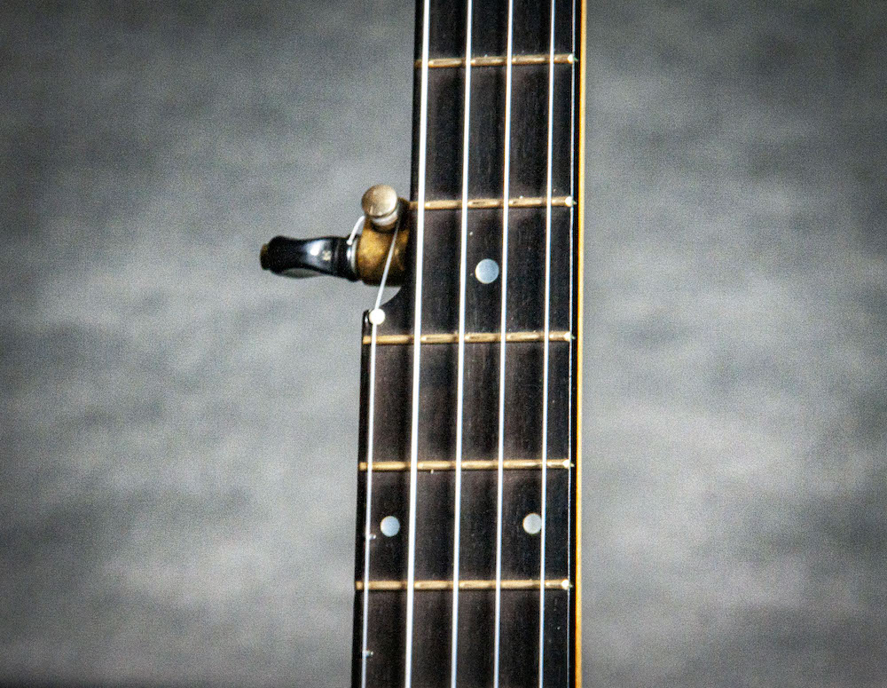
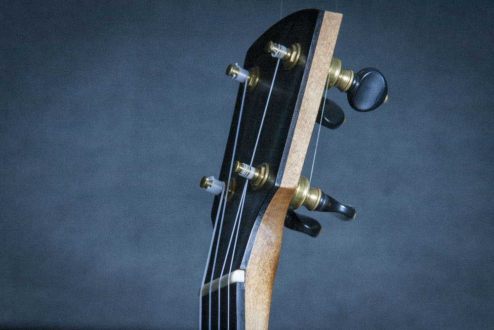
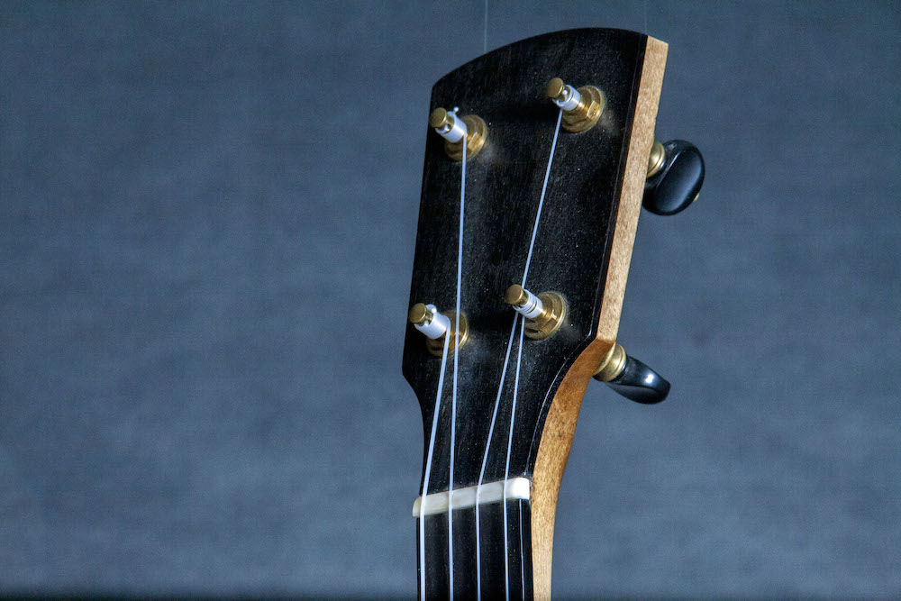
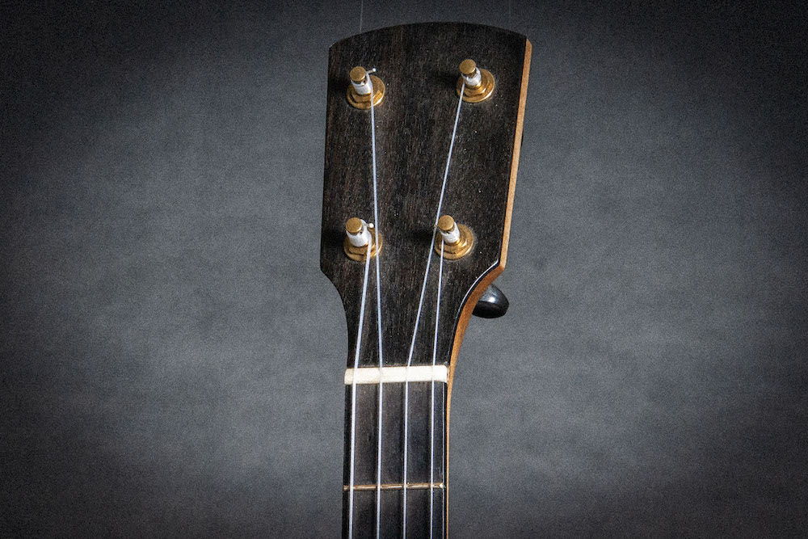
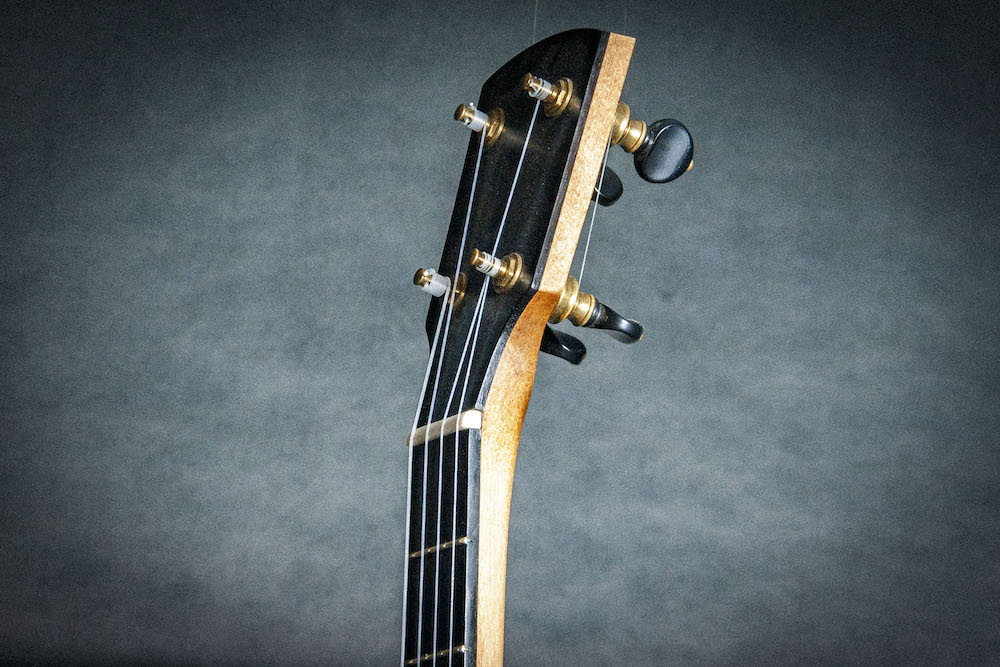

A tackhead open-back banjo built with the same care as a modern instrument — traditional in form, not in feel.
The Driftwood uses a natural skin head tacked directly to the rim, eliminating the tension hardware and flange of a modern banjo. The result is a quieter, warmer instrument with a direct, dry tone that sits well in old-time ensembles.
Tackhead banjos often prioritize historical form over how they actually play. The Driftwood does not make that trade-off. The neck is built with the same attention to geometry, relief, and string height as any other Fundy instrument. The nut and saddle are cut properly. The setup is done before it ships. It is a traditional instrument that does not ask you to compensate for it.
Available fretted or fretless. The simplified, low-part-count construction keeps the instrument light and straightforward to maintain.
Built in small batches. Contact for current availability and wait time.
Inquire About the Driftwood





